À propos / Du code aux systèmes utiles
Je suis Bilal Malih, élève ingénieur en génie logiciel et sciences des données à l’ENSIAS, au Maroc. J’aime concevoir des applications robustes, fiables et évolutives, du backend à l’interface, et y intégrer une IA qui répond à des besoins concrets.
Mes projets relient développement full stack, systèmes multi-agents et recherche augmentée : diagnostiquer des incidents Kubernetes, vérifier des assertions scientifiques ou faciliter la collaboration entre développeurs. Mes expériences m’ont aussi amené à travailler sur la computer vision pour la santé et l’automatisation de workflows.
Je recherche un stage PFE pour contribuer en équipe à des projets à fort impact en génie logiciel et IA appliquée. Échangeons par email ↗
bilal:
formation: ENSIAS · Génie logiciel & sciences des données
approche: comprendre le besoin → concevoir → construire → valider
focus: [full stack, RAG agentique, systèmes multi-agents, observabilité]
principes: [SOLID, architecture claire, travail en équipe]
01 / La stack en pratique

Explorer les technologies et les concepts
02 / Projets sélectionnés
InfraSentinel / Diagnostiquer les incidents Kubernetes
AGENTIC AI × PLATFORM ENGINEERING · 2026
Un agent IA qui corrèle métriques Prometheus et logs Loki pour diagnostiquer les incidents Kubernetes. La remédiation est assistée et soumise à une validation humaine.
L’architecture relie des microservices Spring Boot et FastAPI par gRPC, un dashboard React en temps réel et un pipeline CI/CD sécurisé sous Kubernetes avec Helm et Trivy.
LangGraph RAG Qdrant Kubernetes Spring Boot FastAPI gRPC React
SciCheck AI / Vérifier les assertions scientifiques
MULTI-AGENT SYSTEM × SCIENTIFIC RETRIEVAL · 2026
Une plateforme de RAG agentique entièrement locale, qui vérifie des assertions à partir d’articles arXiv en informatique. Elle combine boucle active de recherche, recherche hybride BM25 + ChromaDB + reranker, détection de posture avec DeBERTa NLI et validation stricte des citations.
Python LangGraph Ollama ChromaDB DeBERTa-v3 FastAPI

Plateforme collaborative / Apprendre et construire ensemble
FULL STACK × DEVELOPER COMMUNITY · 2026
Une plateforme d’entraide technique avec questions-réponses, votes et tags, challenges de programmation, job board et espace de partage de connaissances.
Spring Boot React TypeScript PostgreSQL REST API
03 / Expériences de terrain
MEDCONNECT / IA & computer vision pour la santé
Juillet – septembre 2026
Solution IA de triage pour une clinique dentaire : capture d’images, analyse en temps réel et score d’urgence clinique. Tri de la file d’attente, alertes praticien pour les cas critiques et mise en cache des analyses pour un fonctionnement hors ligne.
Deep learning Computer vision DICOM JSON PWA
Enhanced Technologies / Gestion de projets augmentée
Juin – août 2025
Plateforme de gestion de projets et d’équipes : tâches, Kanban interactif, contrôle d’accès RBAC et notifications WebSocket. Moteur d’automatisation de workflows et assistant IA pour générer des tâches, analyser les risques et suivre les projets.
Java 21 Spring Boot React TypeScript PostgreSQL Redis Docker
04 / Au-delà du code

- Major de promotion, 1er sur plus de 250 étudiants en licence sciences mathématiques et informatique.
- 2ᵉ place au hackathon D.A.T.A, Data & AI Talents Assembly à l’INPT, en computer vision appliquée à la santé.
- Membre de l’ENSIAS IT Club, participation à l’organisation de plus de 10 événements : hackathons, conférences et formations.
- Certifications : Oracle Certified Associate Java SE 8 ; The Machine Learning Process A-Z — 365 Data Science.
Parcours & langues
Arabe : natif / Français : courant / Anglais : intermédiaire
05 / Activité GitHub
Ouvrir les statistiques et le graphe de contributions
*Ces visuels sont générés par des services externes et dépendent de leur disponibilité.*
« La meilleure architecture est celle qui rend l’IA accessible, fiable et utile — pas juste impressionnante. »
